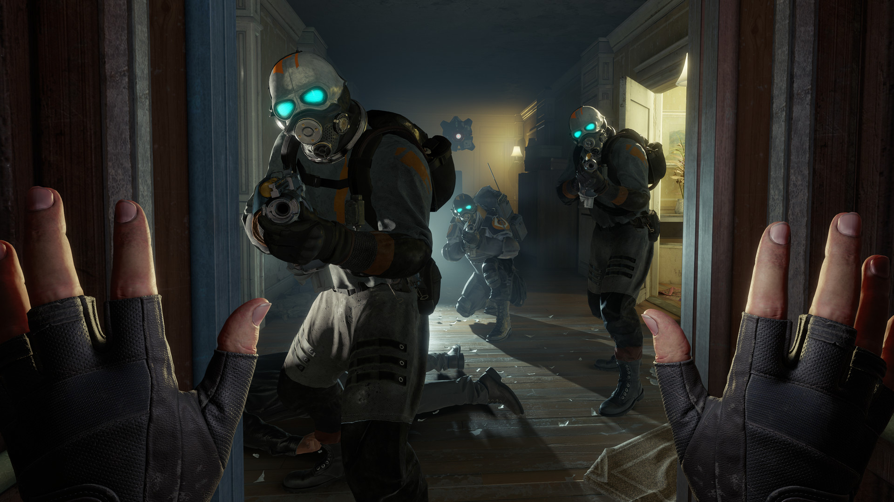

Vulkan 3d графіка у відеоіграх.
Лівий блок сайту

Vulkan це графічне API для 3d відеоігор, яке має відкритий код та написане на c++. Це є найбільш популярним графічним апі для відеоігор, та підтримується за замочуванням у багатьох ігровх рушіях. Це графічне апі дуже фективне та працює дуже швидко, якраз через це я хочу його використовувати для розробки відеоігор. Проблема у тому що графічне програмування є дуже складним, і начитися програмувати графіку на Vulkan з нуля, дуже важко особисто для мене, тому я не знаю з чого мені почати. Коли у мене в університеті був вибір між 3d граікою та 3d моделюванням, я обрав 3d графіку думаюч що на цій дисципліні я буду вичати графічне програмування на opengl або vulkan, проте як виявилося, 3д графіка це і є 3д моделювання, в той час як 3д моделювання це теж 3д моделювання, але у cad.
Повернутись на головну
Правий блок сайту